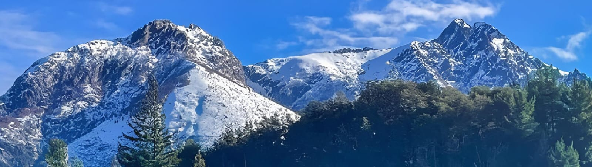
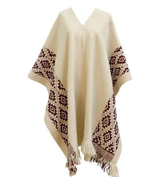
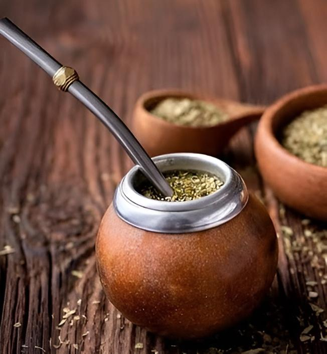
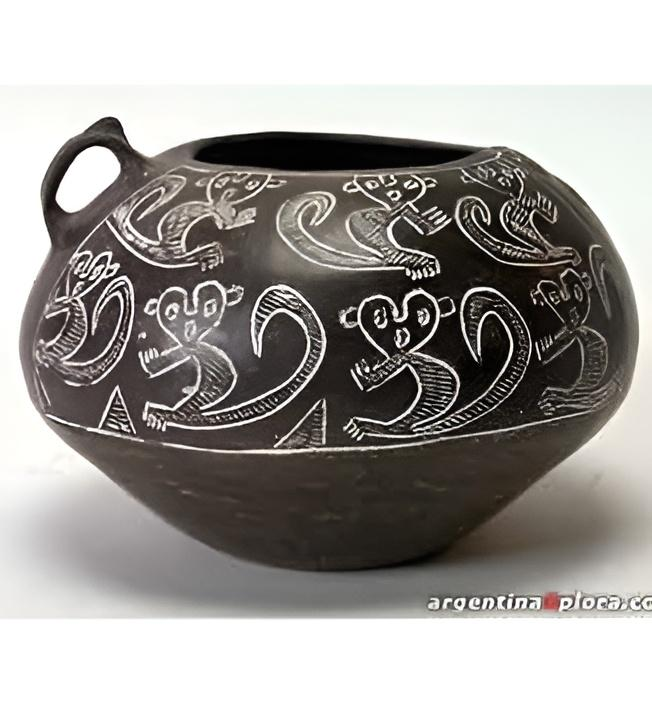

Argentina
La riqueza cultural de Argentina se manifiesta a través de sus artesanías, que son el reflejo de las tradiciones y la identidad de sus regiones. En el norte, los coloridos tejidos andinos, las vasijas de cerámica y las cestas de fibras naturales evocan las raíces indígenas de la región. En la llanura pampeana, la platería criolla y los trabajos en cuero destacan por su estrecha conexión con la cultura gaucha. Por otro lado, en la Patagonia, los tejidos de lana de oveja y las tallas en madera muestran la influencia de las comunidades originarias y la naturaleza austral. Estas creaciones, hechas a mano con técnicas ancestrales, celebran la diversidad cultural y la creatividad de Argentina.
Artículos
Poncho argentino
El poncho es una vestimenta ancestral y contemporánea, la utilizaron nazcas y los incas como abrigo y objeto preciado en sus entierros, lo vestían en 1529 los indios que vio Sebastián Gaboto al remontar el río Paraná, los tejieron las mujeres a sus amados durante las guerras de la independencia en Argentina.
Estos se hacen de lana, algodón, seda, y otros materiales. Se tejen en telares verticales y pueden tener diseños perimetrales y flecos. Estos se producen a lo largo y ancho de toda Argentina.
Nombre: Alessandra Díaz
Correo electrónico: artesaless@outlook.com
Mate
El mate es un recipiente y una infusión que se prepara con las hojas de la yerba mate, una planta originaria de Sudamérica. Los artesanos argentinos elaboran mates con madera de árboles de la región, como el algarrobo o el anchico. También pueden agregar bordes de plata o alpaca para recubrir el mate. Las regiones productoras de yerba mate son Misiones y el nordeste de Corrientes.
Nombre: Ana Sophia Arellano
Correo electrónico: ahrearellanoo@gmail.com
Cerámica indígena
Se trata de cerámica de pasta blanca, opaca como tiza, de grano muy fino, esmaltada de blanco salvo raras excepciones, con pintura azul de cobalto o policromía hecha con trazos rápidos, en platos de base ancha, tazas, lebrillos y bacines. Estas vasijas son mayormente producidas en Huamahuaca y Jujuy.
Nombre: Teresa Zamora
Correo electrónico: zamoratere@outlook.com